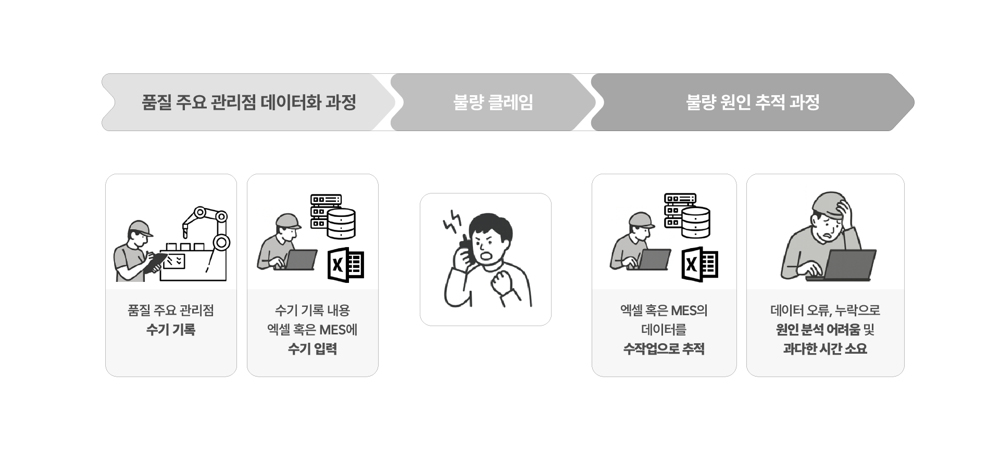
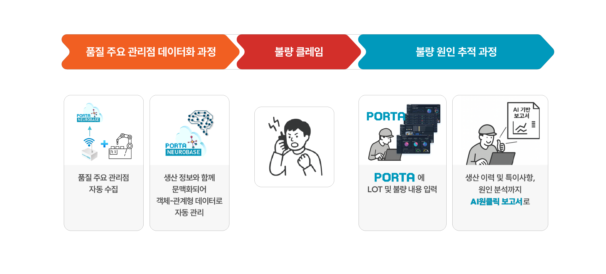
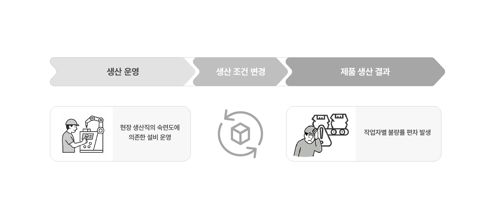
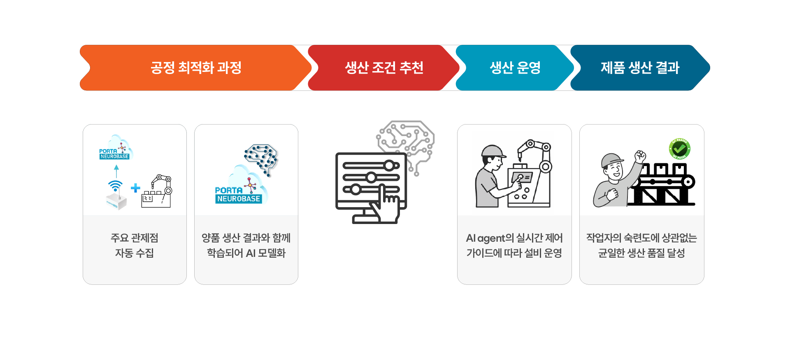
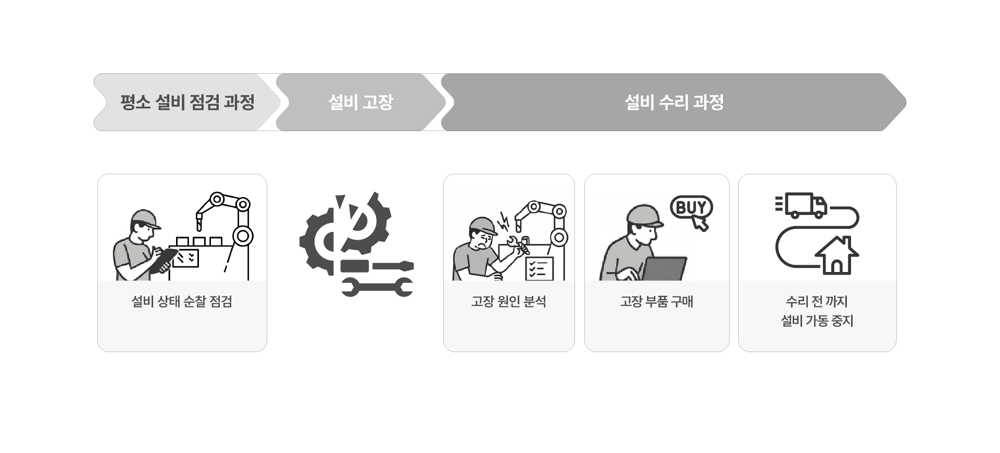
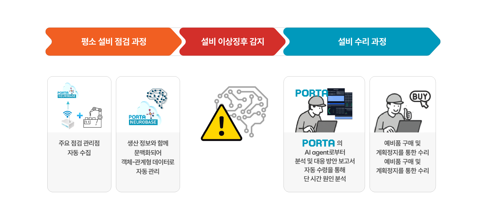
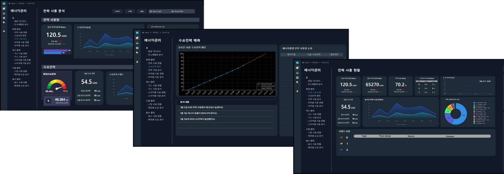

AI를 통해 즉시 생산성을 개선해 보세요.
매일 반복되는 수기 기록과 숙련자 의존에 머물던 제조 운영을 AI 기반 체계로 전환하여 불량·정지·낭비를 줄이고 가동률·품질·에너지 효율은 높일 수 있습니다.
솔루션 소개 바로가기AI 품질 관리LOT 단위 이력 추적의 자동화로 품질 대응 시간 단축
기존 품질 추적은 수기 기록과 수작업 분석에 의존해 시간이 많이 소요되고 오류 위험이 높습니다.

PORTA 적용 후
PORTA는 품질 주요 관리점에 대해 자동으로 관리하며, 불량 발생 시 손쉽게 제품 생산 이력과 AI 원인 분석이 가능합니다.
품질 관리 수기 업무
Man-hour

AI 생산 최적화운영 숙련도에 따른 불량 편차를 시스템화
기존의 생산 운영 방식은 작업자의 숙련도에 따라 불량률 편차가 커질 수밖에 없습니다.

PORTA 적용 후
PORTA는 양품 생산을 위한 실시간 최적 제어 조건을 작업자에게 알려줍니다. 이를 통해 작업자의 숙련도에 상관없는 균일한 생산 품질을 달성할 수 있습니다.
평균 불량률

AI 설비보전점검표 기반 수기 관리에서 AI 기반 감시·대응 자동화
기존 설비 보전 방식은 정기 점검과 사후 보전 방식이 일반적이며, 고장원인 분석에 숙련자의 경험이 매우 중요했습니다. 고장 원인 분석 시간이 길어지고 고장 부품의 입고가 늦어지면 가동률이 낮아지는 악순환이 반복됩니다.

PORTA 적용 후
PORTA는 설비의 주요 점검 관리정보를 자동 관리하고 24시간 실시간 AI 모니터링을 통해 이상징후를 자동 감지합니다. 이후, AI agent는 이상징후에 대한 원인 분석과 대응 방안을 자연어로 작성된 보고서로 자동 전달합니다.
평균 가동률

AI 에너지 관리공장·빌딩·설비 단위의 에너지·전력·탄소 데이터를 통합 분석
공장 내 개별 사이트 및 설비, 라인별 상세 전력 정보를 실시간으로 수집하고 모니터링/시각화/실시간 진단/점검 서비스를 통해 전력 절감 및 효율 개선을 위한 인사이트를 제공합니다.

PORTA 적용 후
추가 에너지 관리 시스템 도입 없이 하나의 플랫폼 내에서 설비 관리, 생산 관리 모듈과 동시에 다양한 에너지 비용을 절감할 수 있는 시스템 구축이 가능하며, 나아가 각종 탄소/에너지 원단위 절감과 온실가스 감축을 지원합니다.